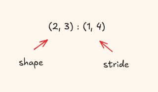
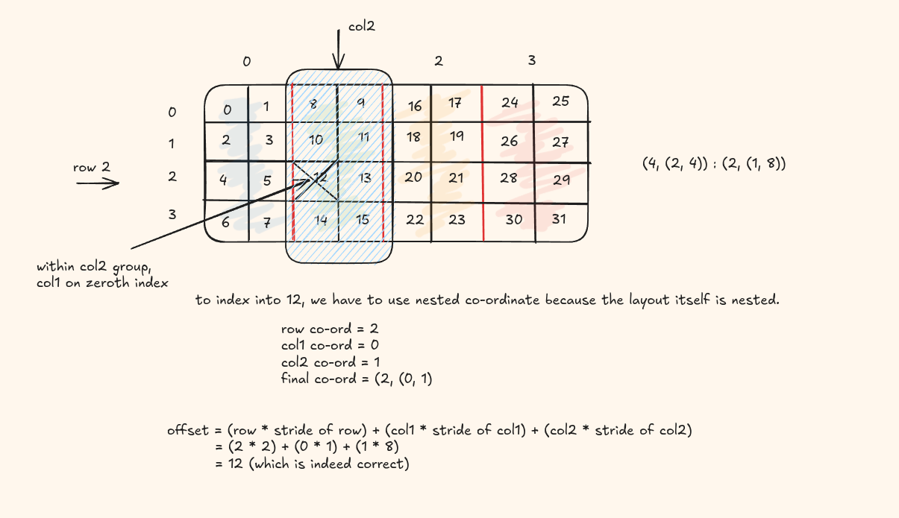
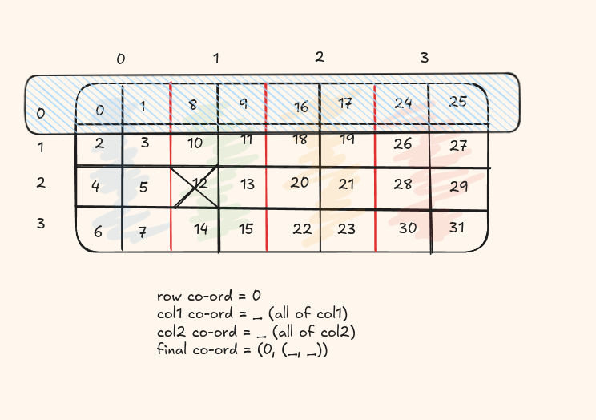
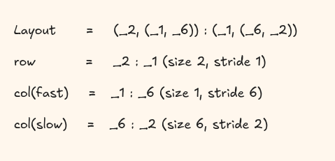
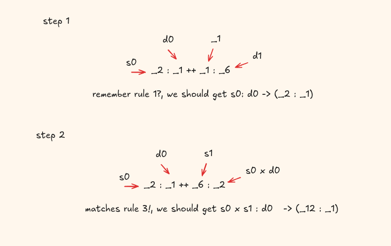
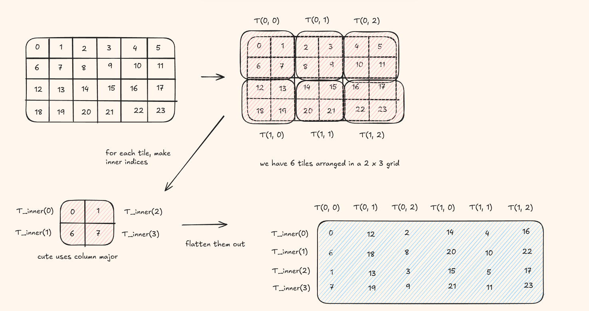

Layout algebra forms the heart of layouts by allowing developers to combine layouts in different ways.
I highly recommend reading my previous blog on layout primer before moving onto this section.
Basic Terms to Know
1. rank (Layout) - the number of top level modes (dimensions) in the layout, equivalent to the tuple size of the shape. Think of it as how many indices you need to address a single element.
Shape (2,3) has two modes: rank 2
A flat shape (6) has one mode: rank 1
2. depth (Layout) - how deeply nested the shape tuple is. A plain
integer has depth 0, a flat tuple like (2,3) has depth 1, and a
tuple-of-tuples like ((2,4),3) has depth 2.
3. shape (Layout) - returns the shape of the layout.
4. stride (Layout) - returns the stride of the layout pair.

5. size (Layout) - the total number of logical elements, i.e. the product of all shape values.
auto A = make_layout(make_shape(2,3), make_stride(1,4));
size(A); // 6 (= 2 x 3)
auto B = make_layout(make_shape(4), make_stride(2));
size(B); // 4 (four elements, even though stride skips addresses)
6. cosize(Layout) - the span of memory addresses the layout touches, defined as the largest offset produced plus one:
$$\text{cosize}(A) = A(\text{size}(A) - 1) + 1$$| Layout | Offsets produced | size | cosize |
|---|---|---|---|
| 4:1 | 0, 1, 2, 3 | 4 | 4 |
| 4:2 | 0, 2, 4, 6 | 4 | 7 |
| (2,3):(1,4) | 0, 1, 4, 5, 8, 9 | 6 | 10 |
For 4:2: elements land at addresses 0, 2, 4, 6. The last address is 6,
so cosize = 6 + 1 = 7. You need a buffer of at least 7 slots even
though only 4 are used — stride-2 leaves gaps at addresses 1, 3, and 5.
7. codomain - the set of all memory addresses the layout actually produces(equivalent to physical memory). Gaps within the span are NOT part of the codomain.
| Layout | codomain | cosize |
|---|---|---|
| 4:1 | {0, 1, 2, 3} | 4 |
| 4:2 | {0, 2, 4, 6} | 7 |
| (2,3):(1,4) | {0, 1, 4, 5, 8, 9} | 10 |
For (2,3):(1,4), addresses 2, 3, 6, 7 fall within the cosize span of 10
but are never touched - they are outside the codomain.
Indexing
Now that we more or less, visually have an understanding of layouts, the first thing you want to to try is to index into them, which is pretty easy!
do you remember the offset formula we used in the last blog:
offset(row, col) = row × s_row + col × s_col
We can adapt it to the nested case also
offset(row, (col1, col2)) = row × s_row + col1 × s_col1 + col2 × s_col2

Here's some code you can try out
auto layout = make_layout(
make_shape (4, make_shape (2, 4)),
make_stride(2, make_stride(1, 8))
);
auto idx = make_coord(2, make_coord(0, 1));
int val = layout(idx);
printf("layout(2, (0,1)) = %d\n", val); // expect 12
Slicing
We can also slice more than a single coordinate, say a whole row, the second column etc.
In python we have the ":" , CuTe provids us with the "_". Let's try to index the whole of first row

Here's some code you can try out
auto layout = make_layout(
make_shape (4, make_shape (2, 4)),
make_stride(2, make_stride(1, 8))
);
auto coord = make_coord(0, make_coord(_, _));
auto out = slice(coord, layout);
print_layout(layout);
print_layout(out);
Coalescing
Coalesce is a simplify operation on layouts. It reduces the number of modes (dimensions) in a layout without changing the underlying mapping from integers to integers.
Conditions met in coalecing
@post size(result) == size(layout)- result has the same number of elements as the input layout@post depth(result) <= 1- the result layout is always flattened to depth ≤ 1@post ∀ i ∈ [0, size(layout)), result(i) == layout(i)- the indices used to access the elements remains unchanged
The four cases of coalescing
| Case | Condition | Result | Explanation |
|---|---|---|---|
| 1 | s₀:d₀ ++ _1:d₁ | s₀:d₀ | no change for the modes with static size 1 |
| 2 | _1:d₀ ++ s₁:d₁ | s₁:d₁ | no change for the modes with static size 1 |
| 3 | s₀:d₀ ++ s₁:(s₀×d₀) | (s₀×s₁):d₀ | if the second mode's stride is the product of the first mode's size and stride, then they can be combined. |
| 4 | Otherwise | (s₀,s₁):(d₀,d₁) | else keep as separate dimensions |
Let's work this out
Input layout:

Coalescing steps:

The final coalesced layout is (_12, _1).
Division
In regular number field when we do division, it means how many equal parts can we divide the numerator into: example 20/10 = 2 equal parts
Layout division means something different here, it is a hierarchy division, basically how can you divide them into tiles within the layout
Let's divide the layout (4,6) : (6,1) by a 2 x 2 tile.
